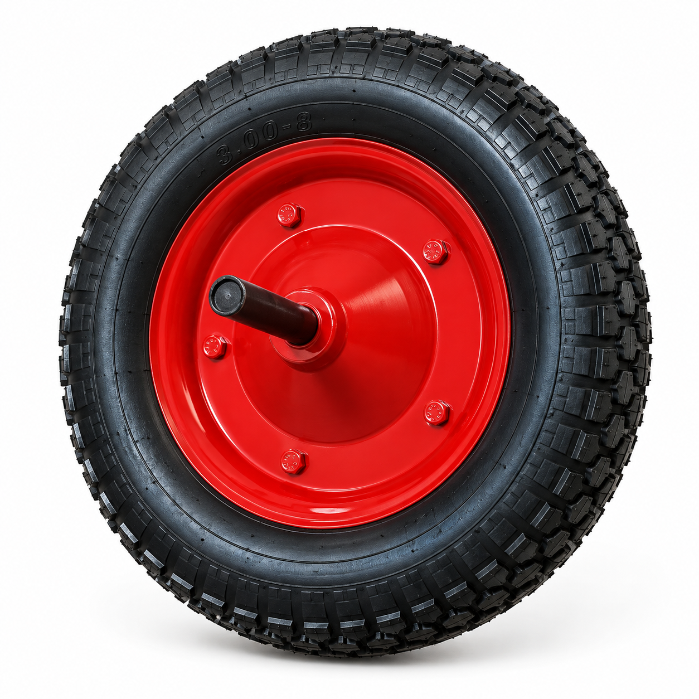

COD. RU-13N
Rueda neumática 13”
Neumático 350×8 de 2 telas, buje plástico y eje de 20 mm. Suave en superficies irregulares.
- Ø 33 cm
- Eje 20 mm
- 2 telas
Precio según cotización · Ferreterías y cliente final